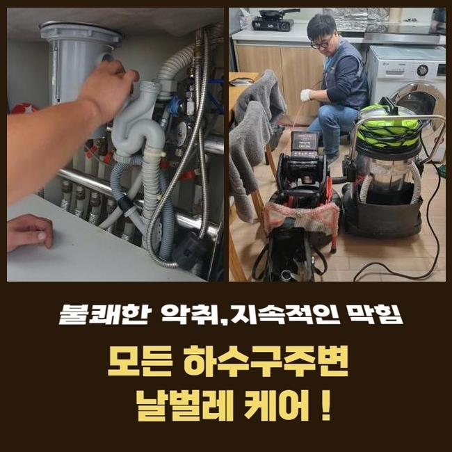
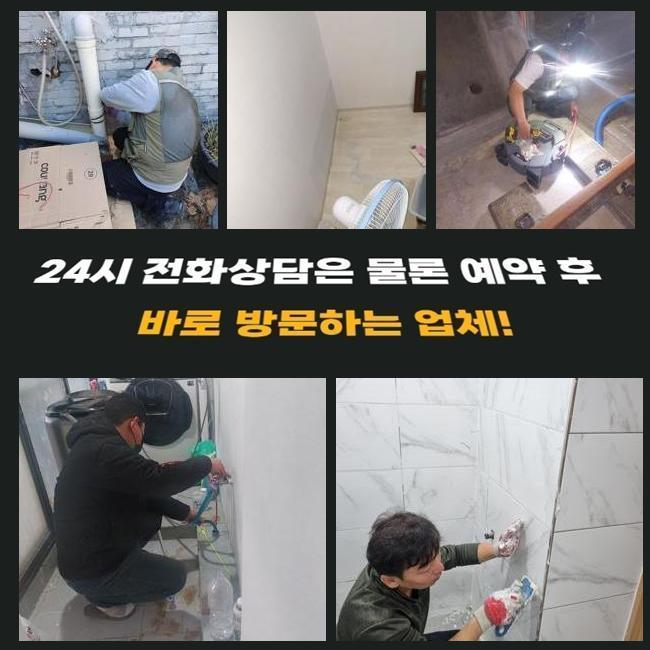
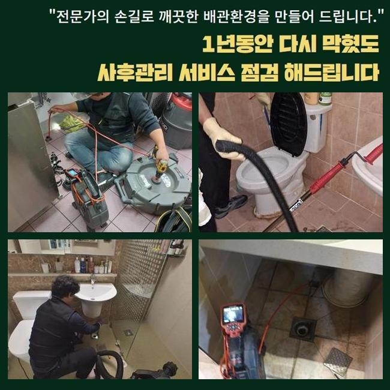
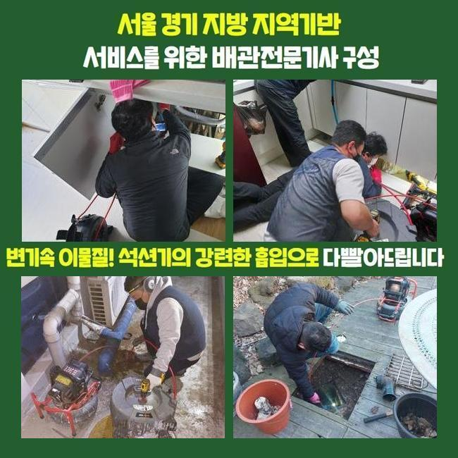
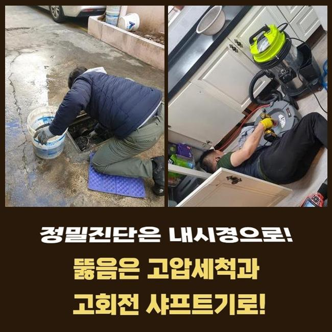
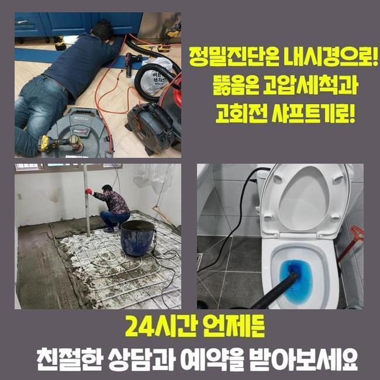

🏠 안성 금산동하수구뚫음 보개면 하수구뚫는비용 배관전문
안성 금산동 하수구막힘 전문 시공 후기

📋 작업 개요
- 위치: 안성 금산동, 금산동, 안성
- 서비스 유형: 하수구막힘, 배관막힘, 뚫는업체, 배관청소, 고압세척
- 작업 일시: 2025. 6. 11. 15:56
- 업체명: 하수구수사대 (010-5615-2118)
🔍 문제 상황
안성 금산동하수구뚫음 보개면 하수구뚫는비용 배관전문
금일엔 주택단지에 내방하여 바깥쪽에 있던 하수도를 뚫었는데요
전문가용 장비들을 써서 빈틈없이 청소하기에 이르렀습니다
배수정체 결함이 불거진것은 저번주부터라고 하셨죠
배수관은 물들이 흘러가며 오수들을 따라서 잔해들이 배출되는데 내측을 시작으로 해 조금씩 퇴적이 이뤄지게 되고 통로들이 막히는데요
잔해물의 누적량과 더불어 덩어리가 진 상태면 심화됩니다
당연하게도 모두 흘러가기에는 제약이 있을 수 밖에 없어요
이렇듯 통수불능의 문제들이 발생되면 보통의 방식으로 해결될 수 없는 사례가 대다수입니다
의뢰인분들이 스스로 평상시에 이용해보는 방법은 클리너제품이나 베이킹소다 등을 쓰는것일텐데요
증세가 발현되고 기간들이 도래하지않았을 경우엔 시도해봄직한 조치겠지만 외부라면 개선에 닿기가 힘들죠
밖에서 결함들이 드러날 때엔 자가조치로 해결하는게 어려우므로 전문가들의 도움들을 꾀하는게 좋겠습니다

🔎 원인 분석
💡 전문가 진단: 정밀 진단 장비를 사용하여 슬러지의 고착 여부를 판명하고 타격/세척 작업을 실시했습니다.
전문업체의 출장을 통하여 지금 어디부터 막혀버린것인지 근원적인 까닭을 특정하는건 물론이며 자가적인 방식과달리 안정적으로 잔해물질들을 제거하여 오래도록 배수관을 청결하게 유지하게됩니다
이번 물들이 안내려가는 또한 저희들은 적재적소에 맞는 장비들을 활용하여 확실히 찌꺼기또한 제거시키고 깊숙한 지점까지 배수가 가능하도록 만들었습니다
살펴보니 바깥에 존재하는 하수관에서 증상이 생긴것이였고 해결하는게 불가하여 작업을 요청하셨습니다
저희들은 의뢰인의 시간들이 괜찮다면 바로 찾아뵈어 해당 장소에서 작업들을 착수하죠
유선으로 연락을 받았더니 문제의스팟은 마당쪽이였어요
단독주택 바깥쪽에 있던 배수구가 막히면서 강수 상황 시 고여버리는 상태라고 하셨어요
특히 우천상황에서는 쓰레기들이나 낙엽 등 수많은 오염원이 흐르죠
수도를 이용하면 갑작스레 관로로 답답하게 내려가는 상태가 빈번했다고 해요
초반엔 의뢰자께서는 알아서 나아지겠지 생각하시어 수습을 미룬 상태라고 하셨어요
어느 순간 해결이 늦었던 까닭인지 예고없이 고이게되며 안내려갔다고 해요
이후에 며칠간의 기간이 흐른 후 빠지는 것을 목격하고 황급하게 연락주신것이였죠

🔧 작업 과정
가옥 특성 상 이웃들에게 피해들을 끼친 경우는 아니였지만 평상 시에 관리적 측면의 조치가 필요했던 장소에요
그 즉시 방문이 이뤄지는 업체가 적어서 걱정이 앞섰는데 저희업체는 바로 가능하여 곧장 호출을 하신것이였죠
저희전문진들은 시기막론하고 주말까지 작업하며 1년내내 배관 관련 작업들을 하므로 의뢰를 받고서 달려가 청소에 집중했답니다
관로들은 좁기에 가시적으로 들여다보는것에는 제약이 있습니다
하수관에 내시경을 이용해 관찰이 힘든 지점에 이물들이 어느정도 있는지 관찰하는데요
내시경장비로 쌓인 이물을 어떠한 방식들로 제거시켜야하는지 정한다면 효율적인 방법들을 선별해주는데요
1차적으로 샤프트도구를 운용하고 사이즈가 커지는 부분은 고압수청소를 사용해보기로 결정했습니다
샤프트의 경우엔 몸체부분과 연결되어있는 선에 체인형태의 노커들이 달린 모습인데 이 노커부속품이 벽쪽에 고착된 단단한 이물을 제거해주는 장치에요
이물제거에 최적화된 기계들을 이용하여 안정적으로 결함들을 풀어냈습니다
작업시점에 혹여 수습하지 못하면 단돈 10원도 청구드리지않는다 고지해드립니다
저희의경우 애초에 고객분이 알려주신 장소로 내방하는 경우 출장관련 금액을 받는 일 없이 찾아뵙기에 경제적인 부담이 덜하고 작업완료가 안되면 금액은 발생치 않으니 편히 의뢰해보세요!
작업마무리 과정에서 이렇다 할 성과없이 돌아가면서 출장관련 금액을 받는 절차들은 절대 발생치않는다 약속드려요
내방한 장소는 외부라인에 설치된 장소로서 모래와 같은것이 흘러들어갔었고 침전된 슬러지들과 엉키게되며 점성들이 생기고 돌처럼 굳어버렸죠
구간마다 뭉친 탓에 센터부터 1차 통수 공간을 확보했어요
흡착이 많이 진행된 터라 간단히 뚫어내는건 아니었는데 심층부까지 제거해주어야 했기에 출수구부터 고압수청소 기계를 이용해야되는 상황들이었습니다
고수압의 기계들을 통해서 뒤탈없이 조치가 이뤄져야했던 상태가었습니다
내시경장치를 쓰면서 계속해서 작업했으나 하수가 원활히 빠지는 현상들이 아니었습니다
그 이유는 폐기물과 기름때가 구간을 따라서 심층부까지 쌓이게되어 고착된 형상을 하고있었어요


✅ 작업 완료
샤프트기기가 이용되지 못하는 위치로 고압노즐분사가 요구되었어요
그후에 세척과정을 거쳐 기름성분을 배출해내며 연결라인에 흡착된 잔해물들을 떨궈내 청소해주었습니다
안정적으로 세척을하니 점차 협소했던 배관으로 통수들이 진행됐고 내측의 라인까지 통수들이 진행되었어요
이와같은 사안들을 고객분에게 고지하고 해당 장소의 해결은 마무리됐습니다
재발될 일이 없게끔 이용해주실때 꾸준하게 관리책을 수행해보시고 만에하나 1년안쪽으로 재차 등장하면 저희들이 애프터서비스를 지원하니 심려치 마십시오!



⚠️ 하수구 배관 막힘 예방 및 관리 가이드
- ✅ 머리카락, 비닐, 물티슈 등 물에 분해되지 않는 이물질은 하수구 유입을 절대 금지해 주세요.
- ✅ 하수구 거름망을 씌우고 모여진 이물질은 주기적으로 쓰레기통에 바로 비워주셔야 합니다.
- ✅ 배관 노후가 심할 경우 이물질이 더 쉽게 걸리므로 주기적인 배관 세척(고압세척 등)을 권장합니다.
- ✅ 작업 후 1년 이내 재발 시 하수구수사대에서 무상 A/S 보증 서비스를 제공합니다.
💡 핵심 정리
- 확실한 장비 작업(내시경 점검 및 샤프트 스케일링)으로 원인을 뿌리 뽑습니다.
- 작업 후 1년 이내에 동일한 부위 재발 시 100% 무상 A/S 서비스를 보장합니다.
- 서울 · 경기 · 인천 전 지역에 24시간 언제든 긴급 출동할 수 있도록 항시 대기 중입니다.
❓ 자주 묻는 질문 (FAQ)
🚨 안성 금산동 하수구막힘 문제로 고민이신가요?
정확한 원인 진단과 확실한 시공으로 재발 없는 해결을 약속드립니다.
24시간 긴급 출동 | 서울 · 경기 · 인천 전지역 | 1년 내 재발 시 무상 A/S